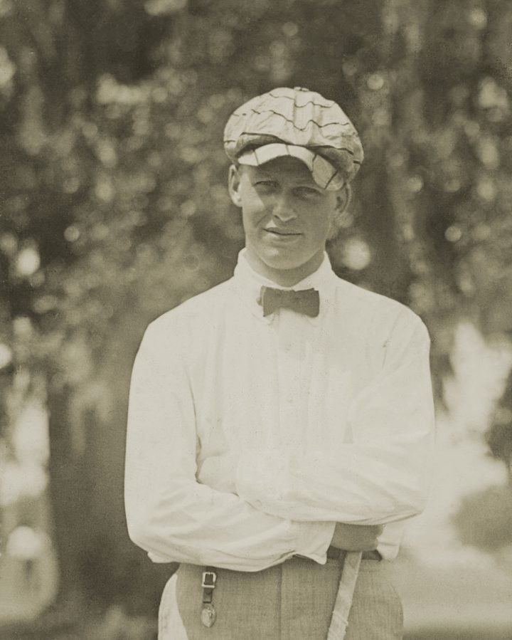
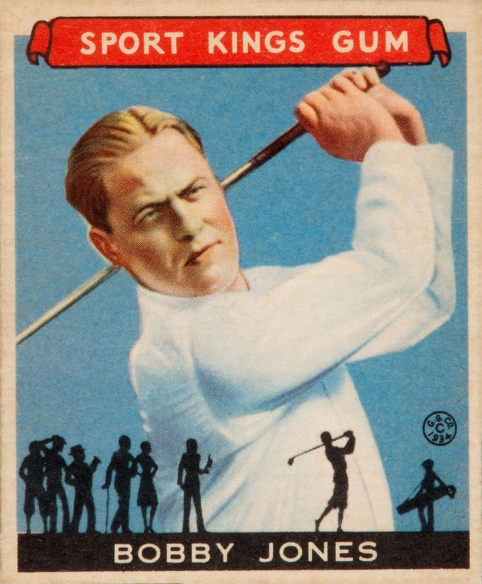
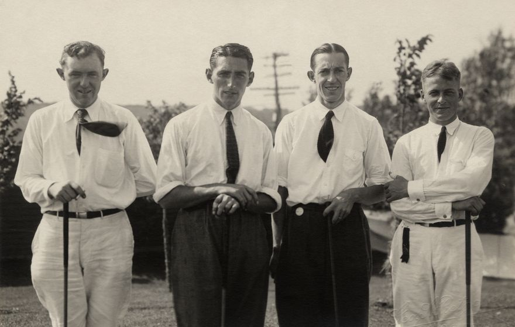
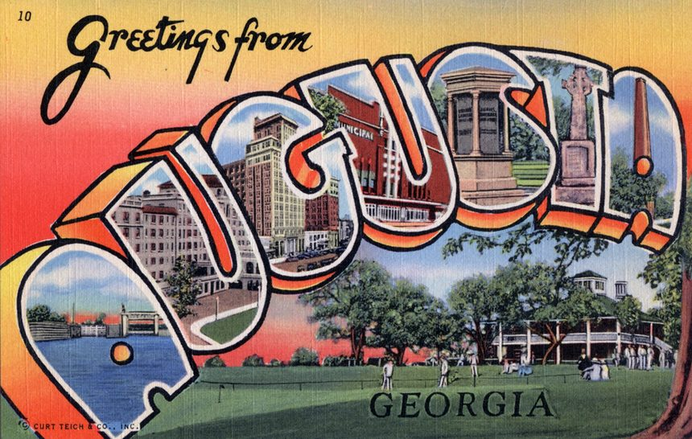

골프에는 4대 메이저 대회가 있습니다. 그중에서도 마스터즈는 특별한 위상을 가집니다. 다른 메이저가 매년 개최지를 바꾸는 것과 달리, 마스터즈는 1934년 창설 이래 단 한 곳, 미국 조지아주 오거스타 내셔널 골프 클럽에서만 열립니다. 오늘은 이 전통의 대회에 얽힌 이야기를 들려드립니다.
전설적인 아마추어가 만든 대회

마스터즈의 설립자는 골프 역사상 가장 위대한 아마추어 골퍼로 꼽히는 보비 존스(Bobby Jones)입니다. 그는 은행가 클리퍼드 로버츠와 함께 오거스타 내셔널을 세우고, 코스는 영국의 설계자 알리스터 매켄지와 함께 만들었습니다.

존스의 명성 덕분에 당대 최고의 골퍼들이 대회에 몰렸고, 그것이 오늘날 마스터즈의 명성으로 이어졌습니다.
그린 재킷의 전통
마스터즈 우승자에게는 특별한 선물이 주어집니다. 바로 초록색 재킷, '그린 재킷(Green Jacket)'입니다. 우승자는 이 재킷을 입고, 이듬해 전년 우승자가 새 챔피언에게 직접 재킷을 입혀줍니다. 마스터즈의 가장 상징적인 명장면이죠.
숫자로 보는 마스터즈 명장면

마스터즈의 역사는 위대한 이름들로 가득합니다.
| 우승 | 선수 | 비고 |
|---|---|---|
| 6승 | 잭 니클라우스 | 역대 최다 · 1986년 46세 우승 |
| 5승 | 타이거 우즈 | 1997년 21세 최연소·12타차 압승 |
| 4승 | 아놀드 파머 | 1958·60·62·64년 |
잭 니클라우스는 1963년 첫 우승을 시작으로 통산 6승을 거뒀고, 특히 46세에 거둔 1986년 우승은 골프 역사상 가장 극적인 장면으로 꼽힙니다. 타이거 우즈의 1997년 첫 우승은 만 21세 최연소 우승이자, 2위와 무려 12타 차라는 역대 최다 타수 차 압승이었습니다.
최근의 드라마, 로리 매킬로이
가장 최근의 이야기도 빼놓을 수 없습니다. 로리 매킬로이는 2025년 마스터즈에서 마침내 우승하며, 4대 메이저를 모두 제패하는 커리어 그랜드슬램을 달성했습니다. 진 사라젠, 벤 호건, 게리 플레이어, 잭 니클라우스, 타이거 우즈에 이은 역대 여섯 번째 그랜드슬램이었습니다.
2011년 혜성같이 등장하고도 11년간 메이저 우승 공백에 시달렸던 그에게는 감격적인 순간이었죠. 그리고 이듬해 2026년, 매킬로이는 마스터즈 2연패까지 달성하며 전설의 반열에 올랐습니다. 90년 역사에서 마스터즈 2연패는 니클라우스, 닉 팔도, 우즈에 이어 단 네 명뿐이었습니다.
마치며

마스터즈는 단순한 대회가 아닙니다. 90년간 한 장소에서 쌓여온 전통과 이야기의 집합체입니다. 그린 재킷 하나에 수십 년의 역사가 담겨 있죠.
매년 4월, 오거스타의 핑크빛 철쭉(아잘레아)이 필 때 이 이야기를 떠올리며 보면, 골프 중계가 한층 깊어질 것입니다.